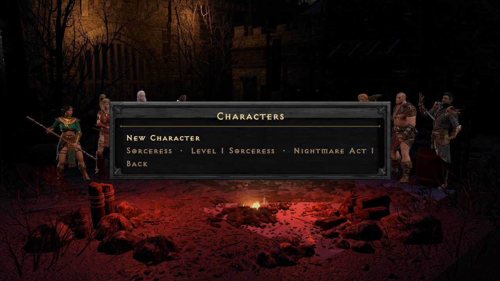
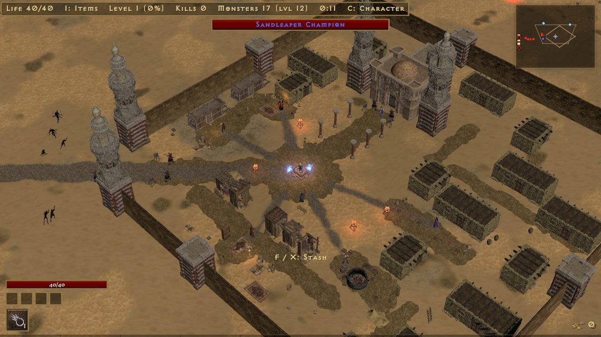
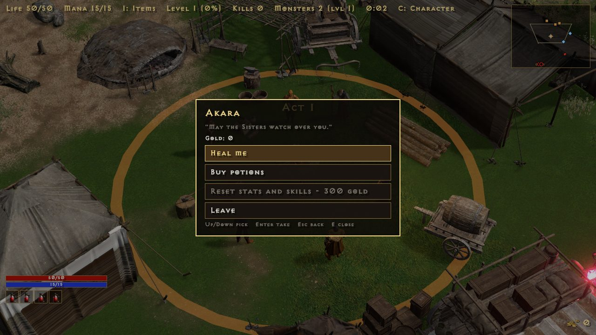
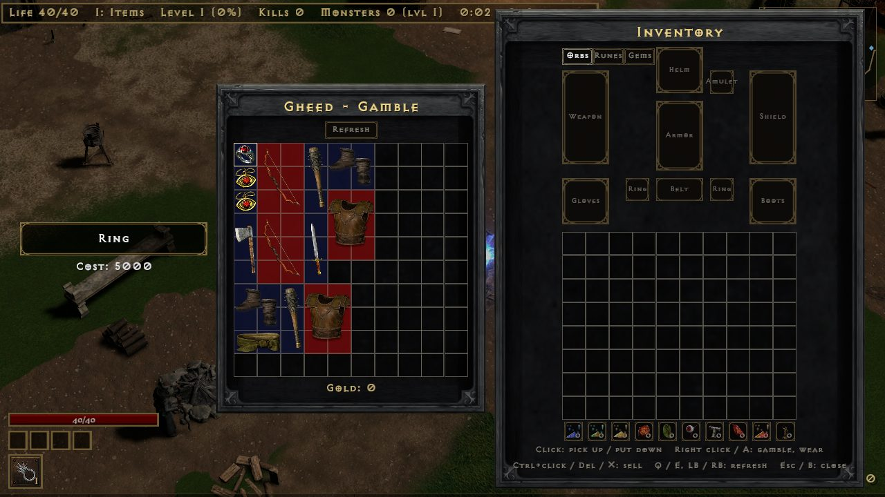
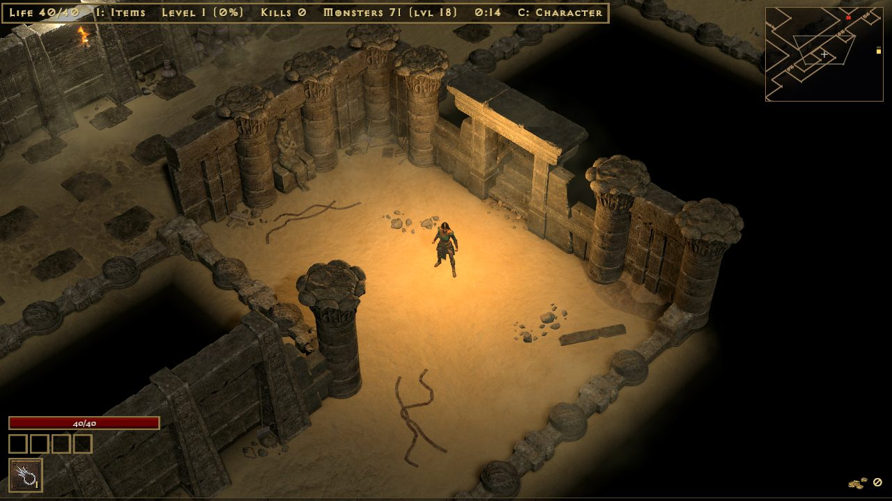
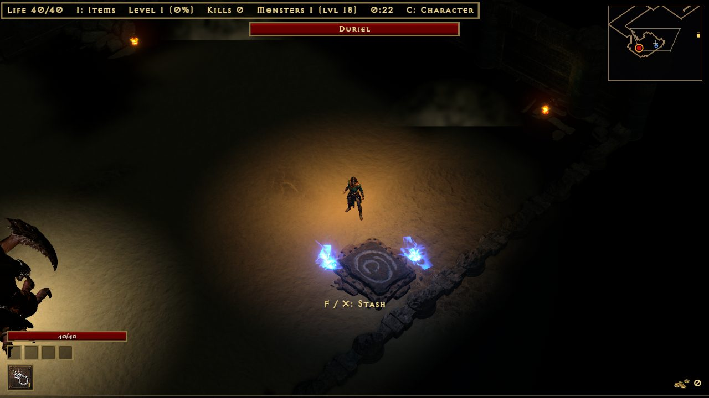
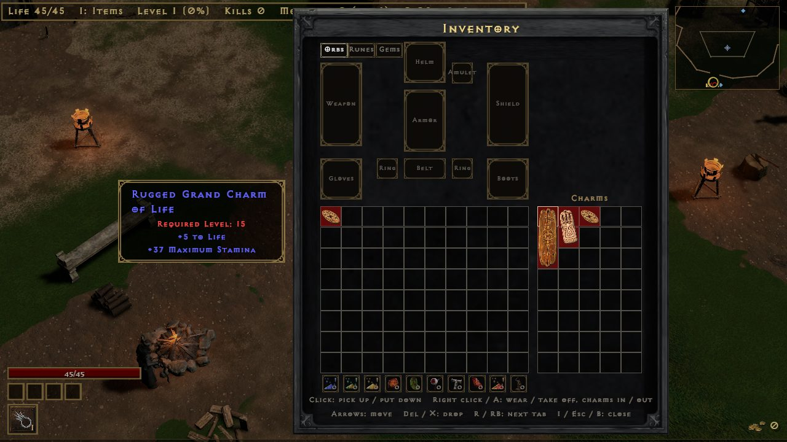
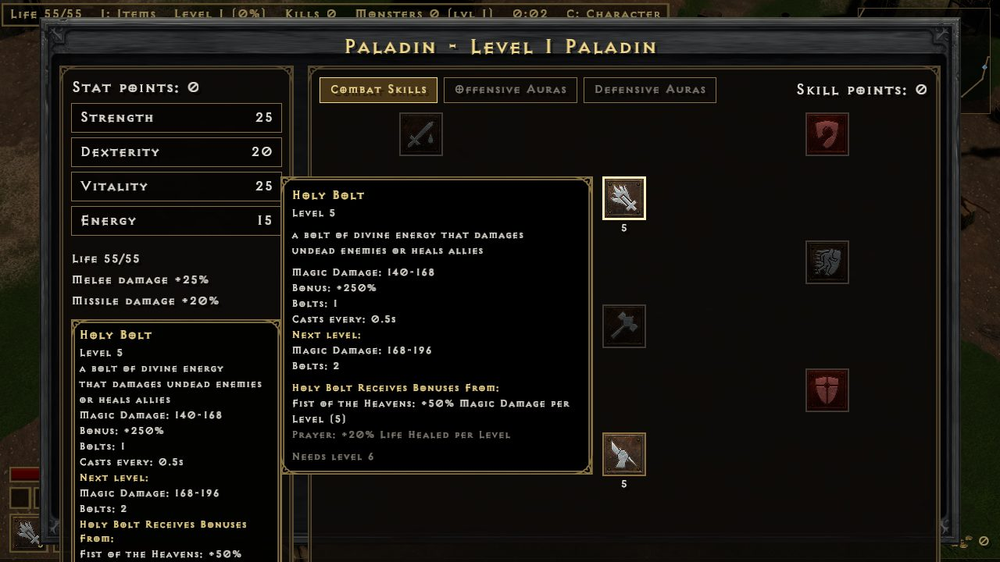
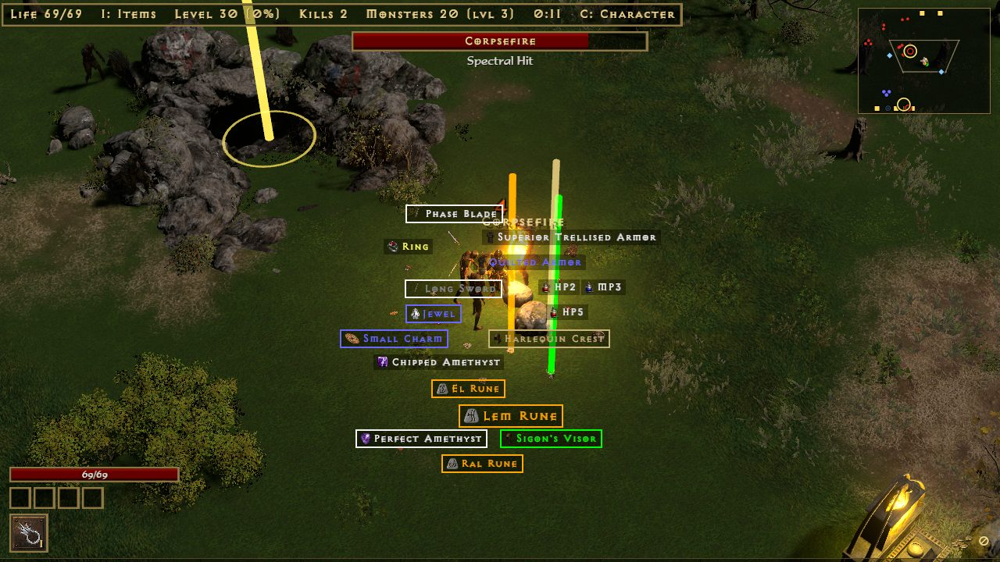
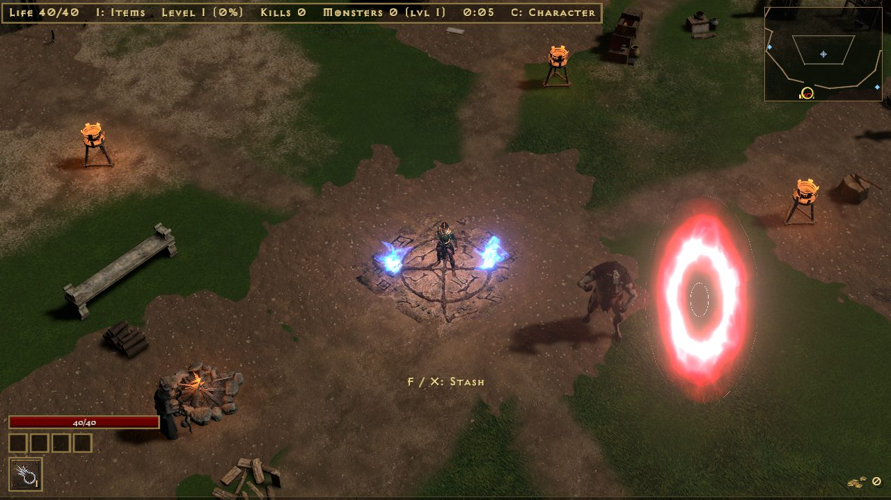

Campaign mode
A faster Diablo II. Pick Campaign on the title screen, make a character, and take her through five acts, then Nightmare and Hell. There are no waves and no respawns: packs stand along the road, each act has a town, and the act's boss waits at the end. The numbers on this page are the game's own.


Characters
- New Character picks a class and two choices that stay with her: Hardcore and Classic casting.
- Each character is a row on the Characters screen. Continue her where she stands, or go back to a Cow Level you have opened.
- She saves on her own as you play, and from the Esc menu. Saves are in the
savesfolder next to the game; updates never touch it.
Towns and townsfolk
Each act's town is the act's one safe place. D2's people stand in it and do their D2 jobs. Walk up and press E (pad A) to talk.
| Job | Who | Does |
|---|---|---|
| Healer | Akara, Fara, Ormus, Jamella, Malah | Fills life and mana for nothing |
| Trader | Akara, Gheed, Drognan, Lysander, Elzix, Ormus, Asheara, Alkor, Jamella, Malah, Anya | Sells D2's stock at D2's prices, rolled again on each visit; buys your items and sells them back |
| Smith | Charsi, Fara, Hratli, Halbu, Larzuk | Adds a socket: 500 gold plus a quarter of the item's price |
| Gambler | Gheed, Elzix, Alkor, Jamella, Anya | D2's gamble list: unseen items for gold, cheaper at low levels |
| Reset | Akara | Gives back all stat and skill points: 300 gold per character level |
The stash stands in town too: F beside it opens the inventory and stash. Alkor also sells Thawing and Antidote potions.


Waypoints and act bosses
- Waypoints are D2R's own. Stand at one and press V to travel: a tab per act, and any waypoint you have reached.
- Each act ends at its boss: Andariel, Duriel, Mephisto, Diablo and Baal. A beaten boss leaves a portal on to the next act, and you can come back to farm her.
Lairs
- Act I: Bone Ash guards the way into the Catacombs, D2 mazes from Level 1 to 4. Act I's last waypoint is on Level 4, by the way down to Andariel.
- Act II: Ancient Kaa the Soulless guards the door of Tal Rasha's Tomb, past the last campfire. The tomb is a D2 maze; Tal Rasha's Chamber holds Act II's last waypoint and the way down to Duriel's Lair.
- So a boss run is a waypoint, a short walk and the boss.
- Caves and lairs are well lit: her light reaches further underground.


Normal, Nightmare, Hell
- Beating Baal opens Nightmare; beating him on Nightmare opens Hell.
- Monsters use D2's own Nightmare and Hell life, damage, experience and monster levels.
- Your resistances drop by 40 on Nightmare and 100 on Hell, as in D2.
Death, softcore and hardcore
- Softcore: she wakes in the act's town. On Nightmare she loses 5% of her current level's experience, on Hell 10%; on Normal nothing. She never loses a level.
- Hardcore: one life. A dead hardcore character stays on the list, greyed out.
- Softcore and hardcore characters each have their own shared stash.
Items
- Monsters drop real D2 items from their treasure classes: white, magic, rare, set and unique, with D2's affixes, sockets and ethereal.
- Uniques and sets drop four times as often as in D2 (a shorter game). Magic find works as in D2.
- Gems, runes and jewels go into sockets: drop one onto a socketed item. Gems give different stats in weapons, helms and shields.
- Runewords: the right runes in the right order on a white or superior base, with exactly that many sockets, make D2's runeword. The Guide (H) lists all of them and which ones you can make now.
- Set bonuses count, for part of a set and for the full set.
- Item drop and pickup sounds are D2's. The Guide shows the drop chances of runes and gems.
Inventory, stash and belt
- I (pad X) opens a 10x8 inventory with a paperdoll. Enter or a click wears, takes or puts an item; Delete drops the item under the cursor.
- What she wears shows on her 3D model, and tooltips compare an item with the one she has on.
- Charms have their own 5x8 grid beside the bag. Only charms there add their stats; charms in the bag do nothing. Her level must meet the charm's, and she can have one of each unique charm in it.
- Drag charms between the bag, stash and grid, or right click (pad A) to move one in or out. Orbs work on charms in the grid.
- The shared stash is 10x10, for all your characters of the same kind (softcore or hardcore).
- Potions you pick up fill the belt (its rows depend on the belt she wears). Drink with 1-4 or pad B.

Stats, skills and casting
- Each level gives 5 stat points and 1 skill point. T (pad Y) opens the stat and skill screen; the run stands still while it is open.
- The skill tree is your class's real three tabs. Each skill needs its D2 level and the skills it builds on.
- Life comes from Vitality and mana from Energy, with your class's numbers. Strength adds melee damage, Dexterity bow and throwing damage.
- Auto casting (the default): skills cast themselves and cost no mana.
- Classic casting (chosen when the character is made): left and right mouse cast the left and right skill, with D2's mana. When a skill can't be paid for or used with the weapon, she swings a normal attack.

Quests
Seven of D2's quests, each once per difficulty. The giver in town pays the reward. A lasting bonus stays with the character; you pick one of three, and the giver changes it later for 100 gold per character level.
| Act | Quest | Giver | Goal | Reward |
|---|---|---|---|---|
| I | Den of Evil | Akara | Clear the cave | +1 skill point |
| I | Sisters' Burial Grounds | Kashya | Slay Blood Raven | Lasting: +30 life, +50 defense or +20% damage |
| II | Radament's Lair | Atma | Slay Radament | +1 skill point |
| III | Lam Esen's Tome | Alkor | Slay Sarina the Battlemaid | Lasting: +5 all attributes, +50 mana or +10% faster cast rate |
| IV | The Fallen Angel | Tyrael | Slay Izual | +2 skill points |
| V | Siege on Harrogath | Larzuk | Slay Shenk the Overseer | Larzuk's Chisel (adds a socket) |
| V | Rite of Passage | Qual-Kehk | Slay the Ancients | Lasting: +10% all resistances, +10 all attributes or +60 life |
Act bosses pay no skill points; the quests do, the D2 way.
Caves and dungeons
- A named super-unique pack guards each cave. Kill them and the cave opens; press G (pad L3) by it to go in.
- Inside: chambers and tunnels, sleeping packs and a champion pack. Clearing a cave gives a rare-or-better item, and it stays cleared for that character on that difficulty.
- Hold G (or L3) inside to leave.
- The Catacombs and Tal Rasha's Tomb lead down to the act bosses; see Lairs.
Crafting orbs
Orbs sit in wells under the inventory grid. Click an orb, then the item. The Guide's Orbs tab says the same in the game.
| Orb | Does |
|---|---|
| Orb of Enchanting | White item to magic |
| Orb of Reforging | Rerolls a magic item's affixes |
| Imbue Orb | White item to rare |
| Orb of Turmoil | Rerolls a rare item's affixes |
| Horadric Orb | Adds an affix |
| Orb of Fate | Rerolls the numbers, keeping the affixes |
| Larzuk's Chisel | Adds a socket |
| Orb of Unmaking | Magic or rare item back to white |
| Hellforge Ember | Adds or replaces one red mod |
| Orb of Ascension | Magic to rare, keeping its affixes |
Item filter
The filter picks which items on the ground show their names, and marks the good ones with a border, a sound, a beam of light and a dot on the map. It only changes what you see and hear, never what drops.
- Default: marks uniques, sets, runes, perfect gems, charms, jewels and good bases. Below character level 30 it hides nothing.
- Strict: hides more plain gear, low gems and runes, and small potions, keys and ammunition.
- Custom: your own rules in
itemfilter.txtbeside the exe. Edit Item Filter in Options writes the file from the filter in use and opens it; saved changes show at once. - Off: no filter; names show as they always have, with no marks.
- Hidden items vanish from the ground. Hold Alt to see them too, dimmed; L switches the filter off for now, and on again.
The rules are blocks that start with Show or Hide, with conditions and looks on the indented lines below. The first block that matches an item decides. Conditions include quality, item type, base, tier, rune, gem, item and character level, sockets, difficulty, ethereal, runeword and part of the name; looks include text, border and background colour, size, sound, beam and map mark.

Town portal
- P (pad RB) opens a town portal. No scrolls are needed. Walk in to reach the act's town, and back through it to where you were; the field waits as you left it.
- It can't be opened in town, in caves, lairs or the Cow Level, or while the act's boss is after you. Survivors runs have no portal.
The Secret Cow Level
- After Baal, the victory screen offers Moo Moo Farm: a herd of 1500 Hell Bovines with their own drops, and the Cow King with his band.
- The herd ends. Once all have fallen the game says The Moo Moo Farm is cleared, and no more come.
- Leave by the red portal, the farm's waypoint, or Esc and Leave. However she leaves, or if she dies in softcore, the items and gold on the farm's ground are laid around the town's waypoint.
- Once a difficulty's farm is open, a red portal stands in every town with a friendly Hell Bovine beside it. The portal goes to the highest farm you have opened, up to your difficulty, and back to that town.
- An unfinished farm waits as you left it. Talk to the Hell Bovine and pick New herd to start it again.
- A farm you have opened can also be picked from the Characters screen.
